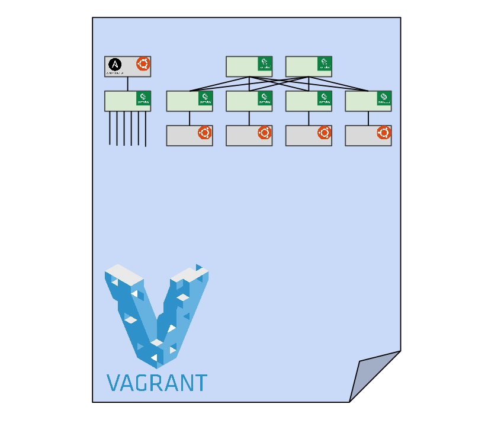

<div class="row">
  <div class="col-md-8 col-md-offset-2">
    <h2>Presentations</h2>

    <div class="panel panel-default">
      <div class="panel-heading">
        <h3 class="panel-title"><a href="http://lug.ncsu.edu/fossfair/FossFair2015">Getting Started with a VPS</a> <small>FOSS Fair 2015</small></h3>
      </div>
      <div class="panel-body">

        <div class="media">
          <div class="media-left">
            <a href="agile-datacenter">
              
            </a>
          </div>
          <div class="media-body">
            In this presentation, I demonstrate how to use Vagrant to deploy
            a virtual data center to do rapid prototyping and failure scenario
            testing. Source code and a Youtube video of the demo are available.
            <ul>
              <li>Using <a href="http://vagrantup.com">Vagrant</a> to spin up a virtual toplogy</li>
              <li>Deploying an Ansible playbook on a virtual topology</li>
              <li>Simulating a network failure and recovery scenario</li>
              <li>Adding new devices to the network and validating the configuration</li>
            </ul>
          </div>
        </div>

      </div>
    </div>

  </div>
</div>
